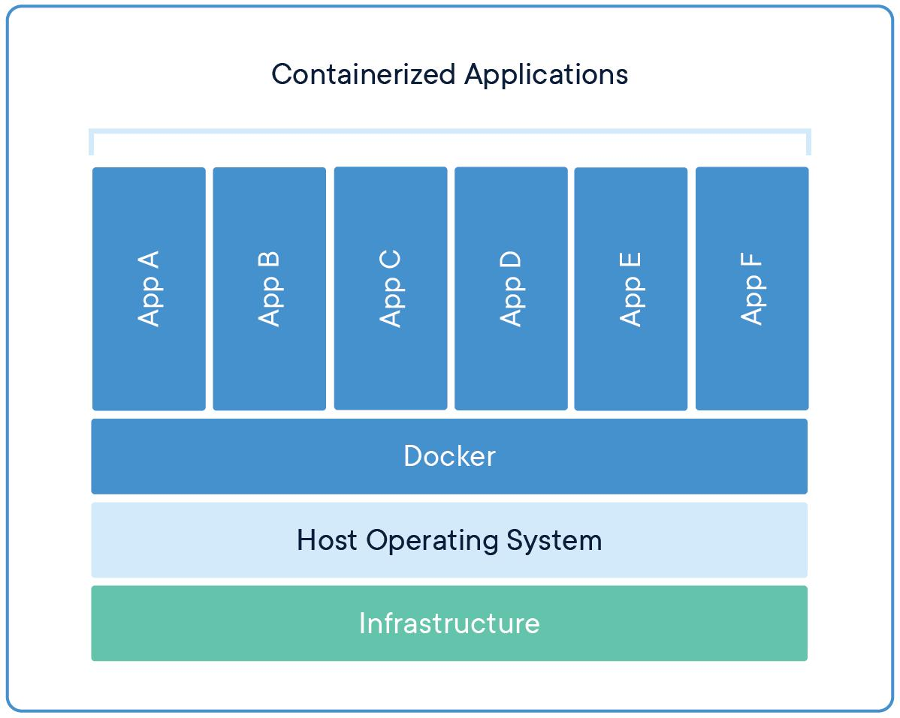

Azure Landing Zones
Jeg bruker Azure Landing Zones til å etablere struktur som gir kontroll på sikkerhet, kostnader og drift.
Dette inkluderer management groups, policyer, nettverk og tydelig ansvarsdeling mellom team.

Jeg hjelper virksomheter med å rydde opp i Azure-plattformer, redusere kostnader og etablere struktur som fungerer i praksis.
Erfaren IT-arkitekt med over 20 års erfaring innen Microsoft-teknologi, med fokus på Azure, DevOps, sikkerhet og governance.
📧 greknuts@online.no
🔗 linkedin.com/in/anne-grethe-knutsen/
Jeg jobber med å gjøre komplekse løsninger enklere, mer robuste og mer kostnadseffektive.
Jeg ser ofte at utfordringer ikke er tekniske, men handler om struktur, eierskap og styring. Det er her jeg bidrar mest – med å skape kontroll og forutsigbarhet i plattformen.
💡 Eksempel: Identifisert løsninger med betydelig overforbruk i Azure, hvor bedre struktur og governance ga store kostnadsbesparelser.
Jeg bruker Azure Landing Zones til å etablere struktur som gir kontroll på sikkerhet, kostnader og drift.
Dette inkluderer management groups, policyer, nettverk og tydelig ansvarsdeling mellom team.

Jeg bruker Terraform til å standardisere og automatisere Azure-miljøer.
Dette gir repeterbare leveranser, færre feil og bedre kontroll på endringer.
Jeg bygger CI/CD pipelines som sikrer kvalitet og trygg utrulling av både infrastruktur og applikasjoner.


Erfaring med Docker og Kubernetes, inkludert bruk av kubectl for å administrere og følge opp miljøer.
Har gjennomført kurs og jobber med å ta dette mer aktivt i bruk i moderne løsninger.
Governance gir kontroll på kostnader, sikkerhet og ansvar.
Jeg etablerer struktur som gjør det enklere å styre plattformen uten å stoppe utvikling.


Jobber med Zero Trust, identitetsstyring og sikker automatisering.
Målet er å redusere risiko samtidig som løsninger forblir effektive.